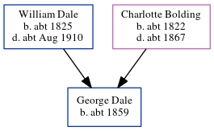

Susan Dale (née Lenone) 1828 -
[ Home ] | [ Calendar ] | [ Surnames Index ] | [ Errors ] | [ Family History ]Susan Lenone, the wife of William Dale (the four times great-uncle of Nigel Horne), was born in Kingstone, Kent, England in 18281,2 and married William (an agricultural labourer with whom she had 3 children: Rosanna, Stephen and Bertha) at St Mary, Chartham, Kent, England on 23 Oct 18703.
During her life, she was living at Parish Road in Chartham on 2 Apr 18711; at Court Lodge Farm in Chartham on 3 Apr 18812; and at The Lees, Chilham, Kent on 31 Mar 19014.
Children
- Rosanna was born in 1862
- Stephen was born c. 1871
- Bertha was born in 1875
Citations
- 1871 England, Wales & Scotland Census - Findmypast (was age 43 and the wife of the head of the household)
- 1881 England, Wales & Scotland Census - Findmypast (was age 52 and the wife of the head of the household)
- Kent Marriages And Banns - Findmypast
- 1901 England, Wales & Scotland Census - Findmypast (was age 73 and the wife of the head of the household)
Media
1881 England, Wales & Scotland Census - GBC/1881/0004706503
1901 England, Wales & Scotland Census - GBC/1901/0005458721
Family Tree
Map
Generated by ged2site. Last updated on Jul 3, 2024
Known Issues
Census information missing between Census UK 1881 and Census UK 1901